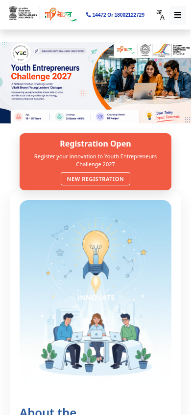
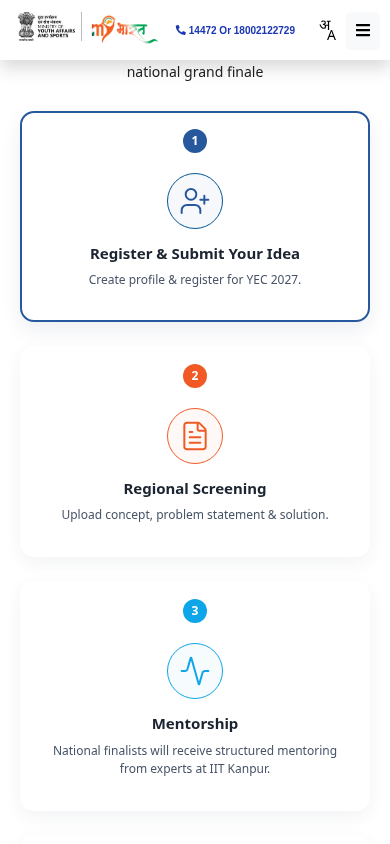

Youth Entrepreneurs Challenge 2027: ages 18-35, cash prizes up to ₹1.5 lakh, register by 22 October
The Youth Entrepreneurs Challenge (YEC) 2027 is a national startup challenge under the Viksit Bharat Young Leaders Dialogue (VBYLD) 2027, for startup founders and working professionals aged 18 to 35 who are solving a social problem. Registration on MY Bharat runs from 1 September to 22 October 2026. Participation is free at every stage. The top 5 national awards are cash, from ₹1,50,000 for first place.
Cash prizes (national awards)
- First: ₹1,50,000
- Second: ₹1,00,000
- Third: ₹75,000
- Fourth: ₹50,000
- Fifth: ₹30,000
The FAQ also mentions non-monetary Special Recognition Awards. National finalists get certificates and mentoring, and ₹5,000 per team for a poster or prototype.
Who can enter
- Startup founders: age 18 to 35, with a DPIIT-recognised startup or a registered MSME, and an industry-ready solution to a real social challenge. Documents: startup certificate, pitch deck, idea summary
- Working professionals: age 18 to 35, employed in government, a private firm, an NGO or academia, with a scalable social-impact solution. Documents: employer NOC or ID proof, and an employment certificate
- Individual or a team of up to 3, and every member must meet the age limit. One idea and one team per person. The Team Leader cannot be changed after registration
How it works
- Register on MY Bharat under VBYLD 2027, then Youth Entrepreneurs Challenge. Pick a theme, upload your pitch deck, final report and a solution video or image, and complete the declarations. You can edit until the window closes
- Regional screening and pitch at a regional nodal institute (October to November 2026). Each State or UT sends 3 teams forward. Teams can get up to ₹10,000 for interstate travel to the regional round
- IIT Kanpur picks national finalists (1 per State or UT, 36 teams) and mentors them online, with a 2-day offline bootcamp on 11 and 12 December 2026
- National showcase and awards in New Delhi, 10 to 12 January 2027, with a 3-minute pitch to the national jury
How to apply: step by step
Checked on the live official challenge page on 19 October 2026 - registration is open, and 22 October 2026 is the last date.
- Open the official page: mybharat.gov.in/pages/youth-entrepreneurs-challenge. Entry is free.
- Tap NEW REGISTRATION under "Registration Open".
- Create your profile and register for YEC 2027 - this is step 1 of the official journey.
- Select your challenge theme, then upload your pitch deck, final report and solution video or image, and complete all the mandatory declarations.
- Submit before 22 October 2026 and save the confirmation. Regional screening (concept, problem statement and solution) runs October-November 2026 through regional nodal institutes.
- If selected: IIT Kanpur mentors national finalists online (with a 2-day bootcamp on 11-12 December 2026), and the national showcase and awards are in New Delhi on 10-12 January 2027.


Steps 3-5 happen after you register or log in, so they are not shown as screenshots.
Video guides
We searched YouTube on 19 October 2026 for a step-by-step registration video for YEC 2027 on mybharat.gov.in in English and in Malayalam. We could not verify one that matches this challenge and the current portal, so we are not linking any rather than risk outdated or unrelated instructions.
Themes
Themes are indicative, not fixed: healthcare, education, agriculture, environment, women empowerment and livelihood, governance, accessibility, disaster management and AI for public service. All themes carry equal weight. Ideas outside the list are allowed if they address a social challenge, in line with the UN SDGs.
Good to know
- Entries are checked for originality, and false or plagiarised information can lead to disqualification at any stage
- Participants in one Innovate for Bharat challenge (Design for Bharat, Hack for Social Cause or YEC) can enter only one of them
We read the YEC page and the VBYLD 2027 page on mybharat.gov.in on 14 October 2026. We did not register or open the portal.
Frequently asked questions
Is entry free?
The YEC FAQ says participation is free at every stage. Travel support is capped and is not a promise that all expenses will be covered.
What is the deadline?
Both official pages show 22 October 2026. No cutoff time was verified. Submit early and check the portal for changes.
Is the age limit 18-35?
Yes on the YEC-specific page, but the general VBYLD page says 15-29. Confirm with MY Bharat if the registration portal applies a different limit.
What changed since this post?
Official YEC and VBYLD pages rechecked on 14 October 2026. Both show registration through 22 October. The YEC page confirms free entry, prize amounts and specific eligibility above. Conflicting general age and later-round timelines are disclosed. AiCoN did not sign in, submit an application or verify the portal's cutoff time.
Sources: Youth Entrepreneurs Challenge 2027 (MY Bharat), VBYLD 2027 tracks and timeline. Checked 14 October 2026; apply steps and video search re-checked 19 October 2026. This is an AiCoN explainer, not a government publication.